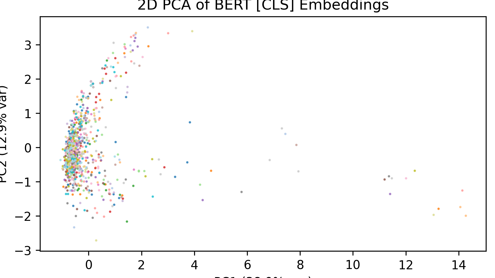
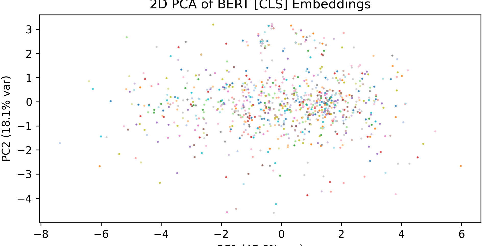
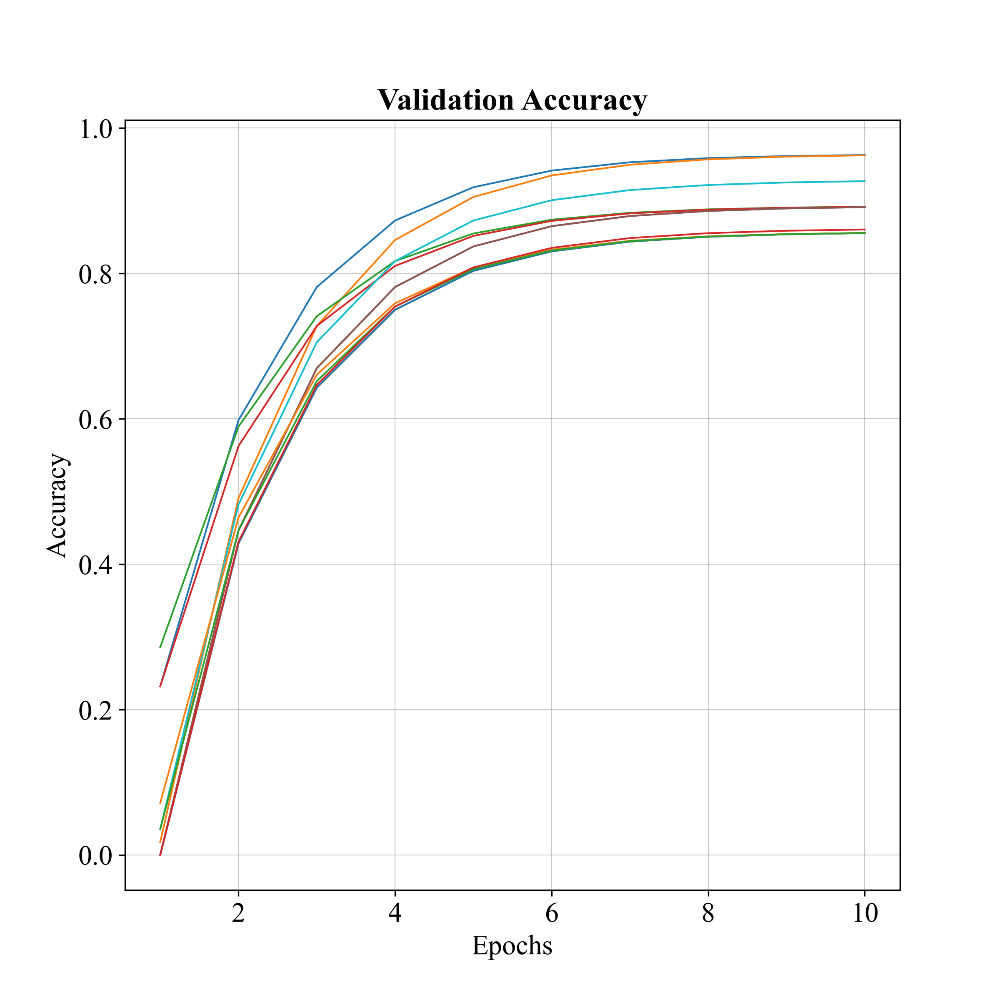
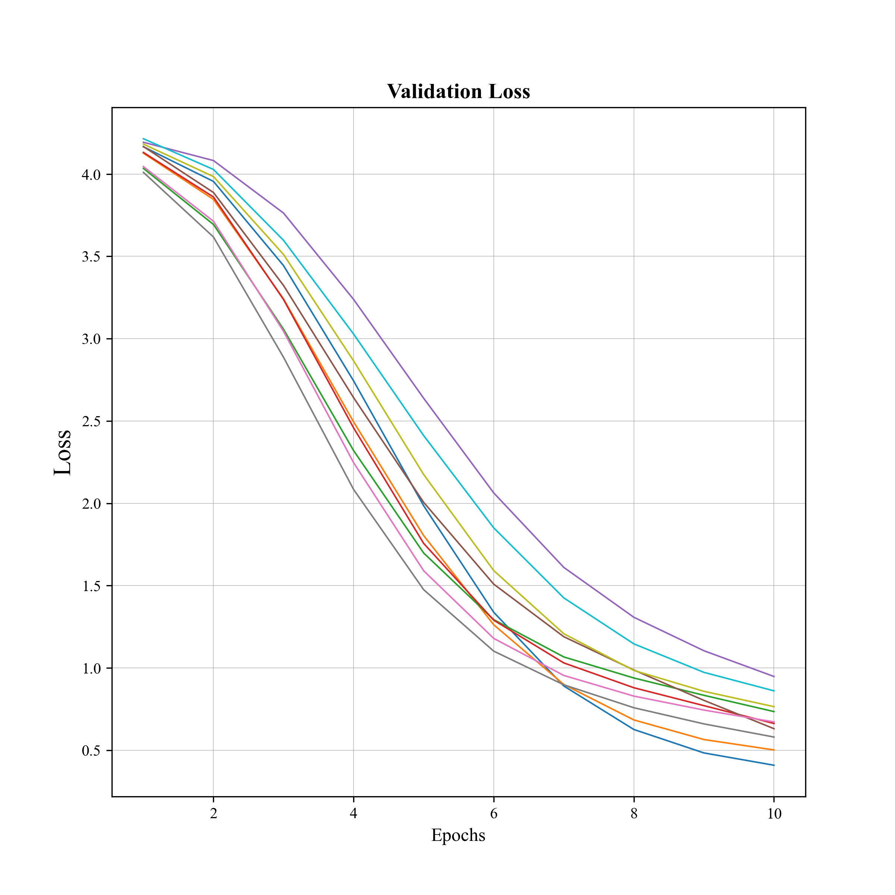
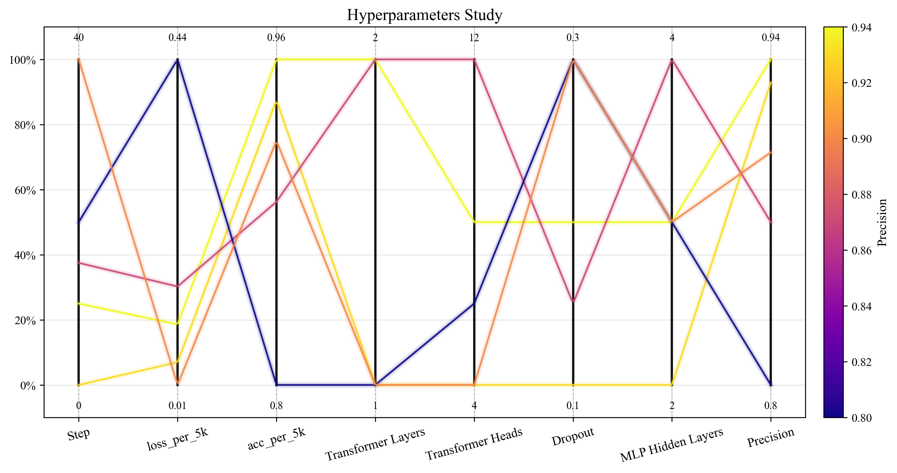

NLP for BIM Automation
Transformer-based framework for mapping client requirements to BIM
Automation in Construction, Volume 181, Article 106601, 2026

Abstract
Translating heterogeneous, client-authored textual requirements into constructible, information-rich models constitutes a primary impediment to digital transformation in early design phases. This work introduces an end-to-end automation pipeline that couples Natural Language Processing with Building Information Modeling to interpret design intent from user inputs and instantiate corresponding BIM assemblies. A semantic translation layer maps parsed entities to a curated BIM model repository and propagates constraints into the authoring environment.
On a multi-project evaluation set, the framework achieved 92% mapping accuracy between client inputs and instantiated BIM elements. The approach improves requirement traceability, clarifies design intent for stakeholders, and supports scalable data-driven design analytics.
Method Overview
The framework follows a compact text-to-BIM pipeline from client language to BIM element generation.
Results
| Setting | Model | F1 score |
|---|---|---|
| Architecture comparison | BERT baseline | 87% |
| Architecture comparison | BERT pretrained + baseline | 95% |
| Architecture comparison | BERT pretrained + proposed method | 96% |
| Language-specific pretraining | BERT English / Korean / multilingual | 91% / 89% / 90% |




Resources
- ScienceDirect paper Published article page.
- OpenConstruction model page Model reference page in OpenConstruction.
- GitHub repository Code, setup files, and documentation.
- Hugging Face model Model weights and related files.
Audio summary
Download model
from huggingface_hub import hf_hub_download
file_path = hf_hub_download(
repo_id="ZappyKirby/client-to-bim",
filename="model.safetensors"
)Citation
@article{SHAH2026106601,
title = {Transformer-based framework for mapping client requirements to BIM},
journal = {Automation in Construction},
volume = {181},
pages = {106601},
year = {2026},
issn = {0926-5805},
doi = {https://doi.org/10.1016/j.autcon.2025.106601},
url = {https://www.sciencedirect.com/science/article/pii/S0926580525006417},
author = {Syed Haseeb Shah and Saddiq Ur Rehman and Inhan Kim and Kyung-Eun Hwang},
keywords = {BIM, BERT, NLP, Recommendation, Office, Architecture, Design}
}